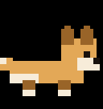

Il ne grandit que si toi tu sors.
Un compagnon virtuel qui progresse avec tes vraies sorties : marche, lieux visités, rencontres.

Scoubanion 2 480pasUn compagnon virtuel qui progresse avec tes vraies sorties : marche, lieux visités, rencontres.

Scoubanion 2 480pas